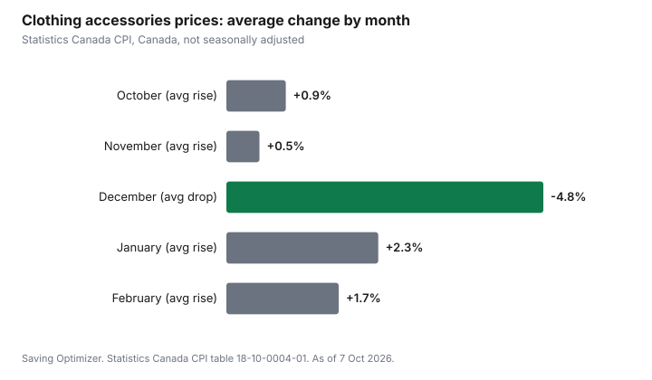

Clothing · Canada
Winter Accessories on a Budget in Canada: Hats, Mitts and Neck Warmers That Actually Keep You Warm
This post contains Amazon.ca affiliate links. If you buy through them, Saving Optimizer may earn a commission at no extra cost to you.
The best budget winter accessories are a warm hat, wind-resistant mitts or gloves, and a neck warmer or scarf you can pull over your nose. Spend most on your hands and face, because those freeze first: Environment and Climate Change Canada says exposed skin can freeze in 10 to 30 minutes at a wind chill of -28 to -39. Wool and synthetic fabrics insulate better than cotton, according to Health Canada, so skip cotton toques and knit gloves for cold days. For price, December is the month to buy: in Statistics Canada's consumer price data, the clothing accessories index fell every December from 2019 to 2025, then usually rose in January. In Ontario, kids' hats, mitts and scarves carry only the 5% GST portion of HST.
Key takeaways
- Prioritize hands, face and head: they freeze first.
- Choose wool or synthetic, not cotton, and a wind-resistant outer layer.
- A neck warmer that covers your nose does more than a fashion scarf.
- StatCan's clothing accessories index fell every December from 2019 to 2025.
- Ontario rebates the 8% provincial HST on kids' hats, mitts and scarves.
- Worked example uses made-up figures.
How cold it gets decides what you need
Environment and Climate Change Canada uses wind chill to describe frostbite risk. Its risk levels are a practical guide to how much coverage your accessories need to give.
| Wind chill | Risk | What it means for accessories |
|---|---|---|
| 0 to -9 | Low | Light hat and gloves are fine |
| -10 to -27 | Moderate | Risk of frostbite and hypothermia if outdoors for long periods without protection; insulated hat and mitts |
| -28 to -39 | High | Exposed skin can freeze in 10 to 30 minutes; cover your face |
| -40 to -47 | Very high | Exposed skin can freeze in 5 to 10 minutes; full face cover and warmest mitts |
| -48 to -54 | Severe | Exposed skin can freeze in 2 to 5 minutes |
| -55 or colder | Extreme | Exposed skin can freeze in less than 2 minutes; outdoor conditions are hazardous |
Environment Canada also notes that in sustained winds over 50 km/h, frostbite can occur faster than its table shows. If you commute on foot, wait for buses or work outside, you will reach the high-risk range more often than someone who drives from a garage to a parking garage, and your accessories should match.
What to buy, item by item
Hat
A hat that covers your ears is the priority. Wool or a synthetic fleece lining keeps you warmer than a loose cotton knit, in line with Health Canada's advice on fabrics. If you wear a hood, a thinner hat underneath often works better than one bulky toque. A plain acrylic knit toque such as the Carhartt knit cuffed beanie is one budget option; fold the cuff down over your ears.
Mitts or gloves
Mitts keep your fingers together, which many people find warmer, while gloves let you use your hands. A practical budget setup is a pair of insulated, wind-resistant mitts for the coldest days and thin liner gloves you can wear on their own or inside the mitts. Liners also let you use a phone for a minute without baring your skin. Look for a cuff long enough to tuck into or over your coat sleeve.
Neck warmer or scarf
Health Canada advises putting a scarf over your nose in the cold. A tube-style neck warmer (sometimes called a neck gaiter) stays in place better than a long scarf and pulls up over your nose and cheeks in seconds. A balaclava gives full coverage for very cold days or winter sports.
Socks
Warm socks, such as Danish Endurance merino wool hiking socks, matter as much as boots. Health Canada notes that some synthetic fabrics are designed to move perspiration away from your body, which keeps you dry, and that you lose heat faster when wet. Our guide to merino and synthetic base layers compares the fabrics, and winter boots on a budget covers the boots themselves.

When to buy: December, not January
Statistics Canada's Consumer Price Index tracks prices for clothing accessories every month. Looking at the index for Canada, not seasonally adjusted, it fell in every December from 2019 to 2025, by between 2.4% and 6.6%, an average of about 4.8%. It then rose in January in six of the seven years from 2020 to 2026. That pattern fits holiday and Boxing Day promotions: the cheapest point in the official data is December, not the new year.
These are national averages. A single store can still clear winter stock in January or February, especially in sizes and colours that did not sell. But if you need new mitts anyway, buying during December promotions is a reasonable plan. Our guides to the best time to buy clothes and Black Friday vs Boxing Day for clothing go further.
Kids: the Ontario tax break and growth spurts
In Ontario, the province gives a point-of-sale rebate of the 8% provincial portion of HST on children's clothing and footwear. That includes hosiery, hats, scarves, gloves and mittens in sizes and styles designated for children. Adult-sized items are excluded even if bought for a child, as are items designed to prevent injury. Kids lose mitts constantly, so buying two cheap identical pairs is often better than one expensive pair; mitts with a connecting string, such as Unigear kids' waterproof mittens, also help. Our kids' winter gear cost guide covers the rest of the list.
Make accessories last
- Dry mitts and hats fully between uses; Health Canada notes that you lose heat faster when wet.
- Wash wool by hand or on a wool cycle and dry flat, as the care label says.
- Keep a spare hat and pair of mitts in the car or work bag.
- Label kids' items and keep a lost-and-found habit at school pickup.
- Repair small seam splits early; they grow fast.
Match the kit to how you spend time outside
- Walking and transit commutes: the most exposure for most people. Prioritize a neck warmer that covers your nose, insulated mitts and a hat that fits under a hood.
- Driving: you need less on most days, but keep a warm hat, mitts and a spare neck warmer in the car with your winter car kit in case you break down.
- Running and active sports: you heat up fast. Thin, breathable layers and light gloves beat heavy insulation, so you do not soak them with sweat.
- Skating, tobogganing and watching kids' games: long periods standing still. This is where the warmest mitts and a balaclava earn their cost.
Where to find cheaper accessories
Accessories are one of the easiest winter items to buy cheaply without giving up warmth:
- Thrift and consignment stores often have barely used wool hats and scarves. Wash before wearing.
- Multi-packs of liner gloves and kids' mitts cost less per pair and cover lost items.
- Workwear and outdoor stores sell plain, durable mitts and neck warmers without fashion-brand markups.
- End-of-season sales help for next winter, though choice in common sizes shrinks.
Worked example (made-up figures)
Priya is a made-up example, and the prices and wear counts are invented. She walks 20 minutes to the bus each way and wears accessories on about 100 days a winter.
- A made-up $15 cotton-blend hat and $10 knit gloves get wet, stretch and need replacing every winter: $25 a year.
- A made-up $40 wool-blend hat, $50 insulated mitts and $15 liner gloves last three winters: about $35 a year.
- A made-up $20 neck warmer lasts three winters: about $7 a year.
- Per wear, the warmer kit costs about $0.42 a day in this example ($35 + $7 = $42 a year, over 100 days).
In this example, the warmer kit costs a bit more per year but keeps her face and hands covered on the high-risk days that the cheaper kit cannot handle. Buying it in December promotions would cut the cost further.
Sources
- Environment and Climate Change Canada, Wind chill and the Wind Chill Index (risk levels; freeze times; winds over 50 km/h), canada.ca, page modified 2025-12-16, as of 7 Oct 2026.
- Health Canada, Extreme cold (wool and synthetic insulate better; layers; scarf over nose; change out of wet clothing), canada.ca, page modified 2021-10-19, as of 7 Oct 2026.
- Statistics Canada, Table 18-10-0004-01 Consumer Price Index, monthly, not seasonally adjusted (clothing accessories, 2013=100; data to August 2026), statcan.gc.ca, as of 7 Oct 2026. Monthly averages calculated by Saving Optimizer.
- Government of Ontario, HST: Ontario point-of-sale rebates (children's clothing including hats, scarves, gloves and mittens; exclusions), ontario.ca, updated March 19, 2025, as of 7 Oct 2026.
- Prices, lifespans and wear counts in the worked example are made up.
Frequently asked questions
What winter accessories do I need in Canada?
A hat that covers your ears, insulated wind-resistant mitts or gloves, warm socks and a neck warmer or scarf you can pull over your nose.
Are mitts warmer than gloves?
Mitts keep fingers together, which many people find warmer. A common setup is insulated mitts plus thin liner gloves.
When are winter accessories cheapest?
In Statistics Canada's price data, the clothing accessories index fell every December from 2019 to 2025 and usually rose in January.
Is cotton OK for winter hats and gloves?
Health Canada says synthetic and wool fabrics provide better insulation, and you lose heat faster when wet.
How fast can frostbite happen?
Environment Canada says exposed skin can freeze in 10 to 30 minutes at a wind chill of -28 to -39, and faster at colder wind chills.
Are kids' mitts tax-free in Ontario?
The 8% provincial portion of HST is rebated at the till on children's hats, scarves, gloves and mittens, so you pay only the 5% GST portion.
Researched and drafted with AI assistance and fact-checked against official Canadian sources. How we create content.
Disclosure: This page contains Amazon.ca affiliate links. As an Amazon Associate, Saving Optimizer earns from qualifying purchases. Education only.